BINGO TOUR & TRAVELS
Jaipur Premium Fleet
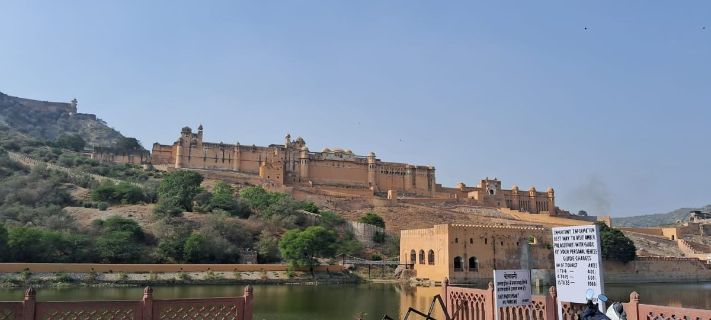
2 Days TourRajasthan
Amer Fort, Jal Mahal, Hawa Mahal, City Palace, Jantar Mantar, Nahargarh sunset view & Patrika Gate.
Book This Tour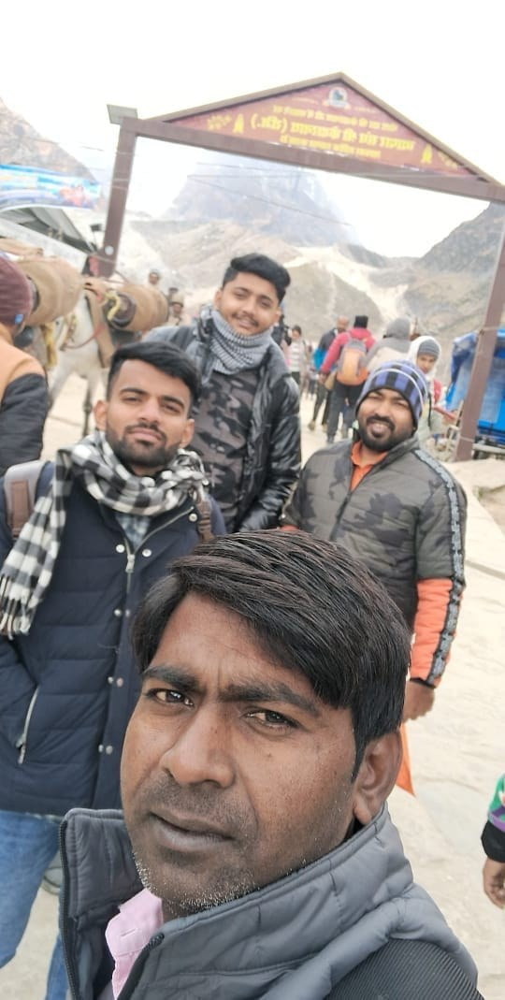
9-10 Days YatraUttarakhand
Kedarnath Dham Jyotirlinga, Badrinath Temple, Gangotri, Yamunotri, Haridwar, Rishikesh & Devprayag Sangam.
Book This Tour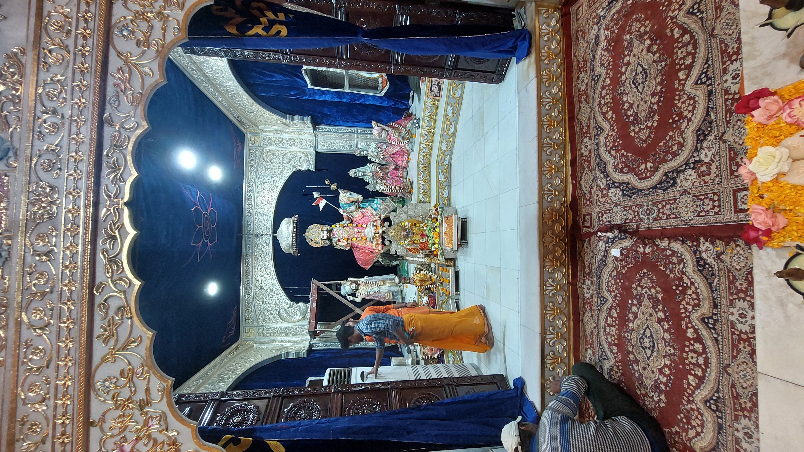
Same Day / 1 DayKhatu, Sikar, Rajasthan
Sacred Shri Khatu Shyam Ji Temple darshan, Shyam Kund, Toran Dwar, VIP line assistance, and Ringas roadtrip.
Book This Tour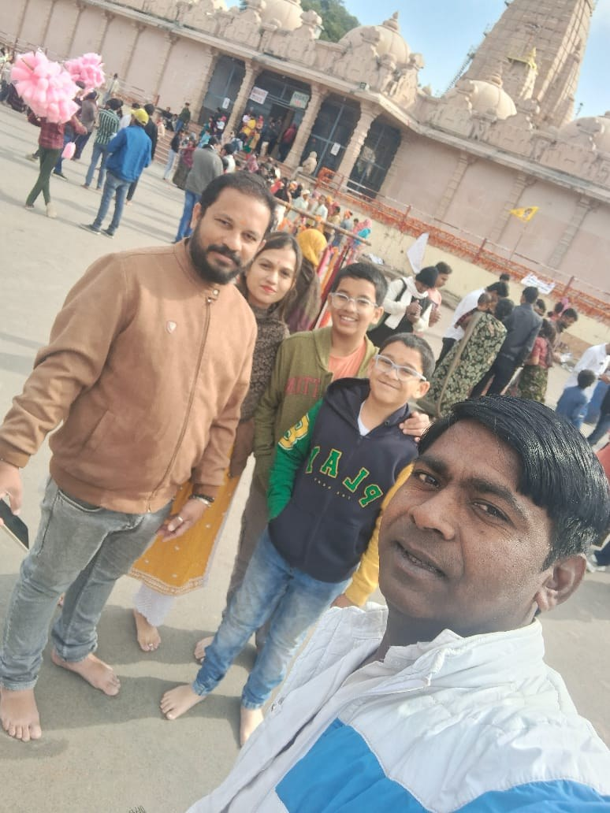
1 Day DevotionalSalasar, Churu, Rajasthan
Miraculous round-faced Lord Hanumanji idol darshan, coconut tying ritual, Anjani Mata Mandir & Mohan Mandir.
Book This Tour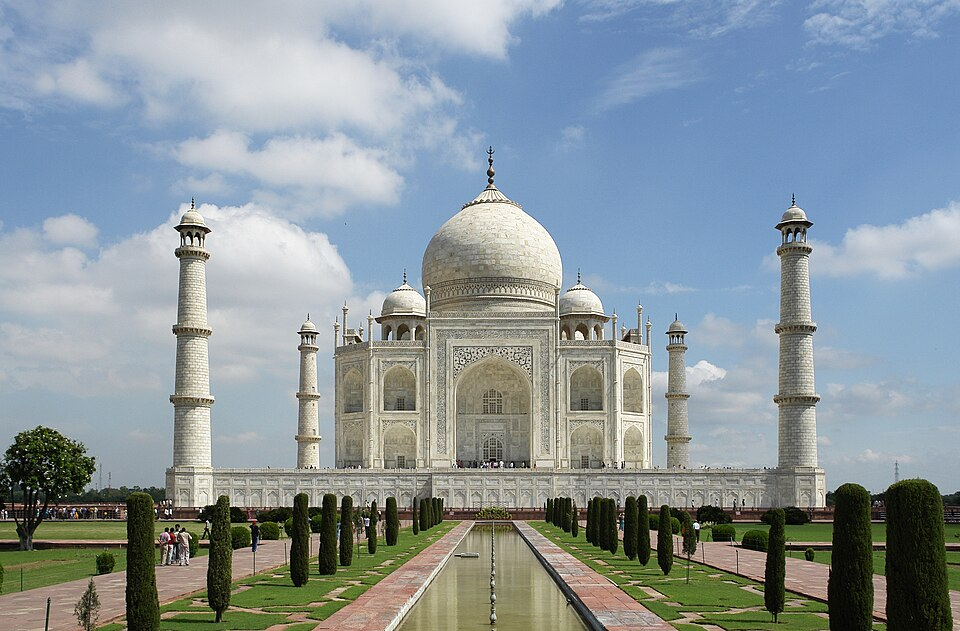
Same Day / 1 DayUttar Pradesh
Wonder of the World Taj Mahal, UNESCO Agra Fort, Mehtab Bagh sunset viewpoint & Fatehpur Sikri Buland Darwaza.
Book This Tour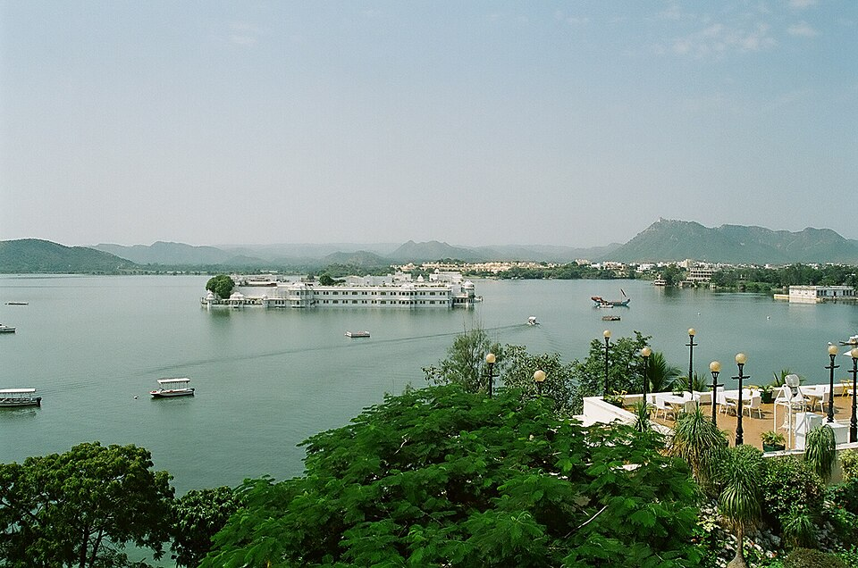
3 Days HeritageMewar, Rajasthan
Lake Pichola Boat Ride, City Palace, Jag Mandir, Saheliyon Ki Bari, Fateh Sagar Lake, and Monsoon Palace.
Book This Tour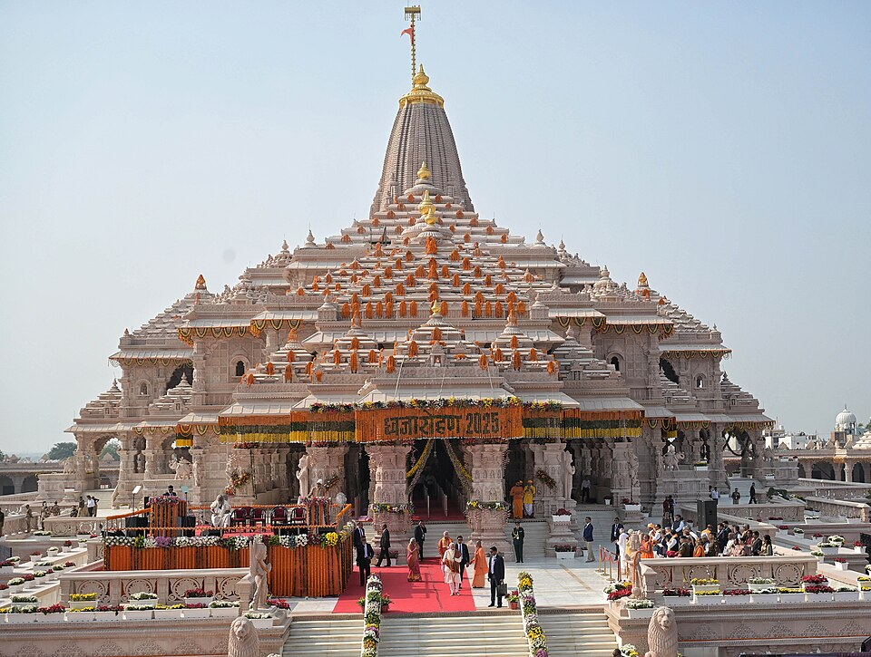
3-4 Days PilgrimageUttar Pradesh
Grand Shri Ram Janmabhoomi Mandir, Kanak Bhawan, Hanuman Garhi, Saryu River Ghat, Kashi Vishwanath & Ganga Aarti.
Book This Tour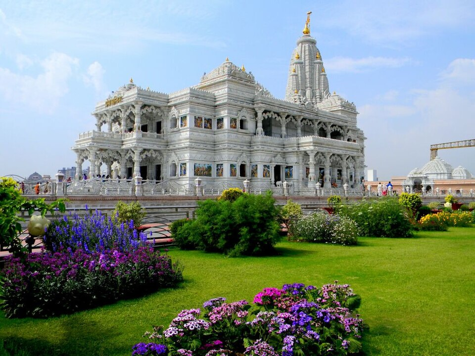
2 Days DevotionalUttar Pradesh
Prem Mandir lighting, Shri Banke Bihari Mandir, ISKCON Vrindavan, Shri Krishna Janmabhoomi & Govardhan Parikrama.
Book This Tour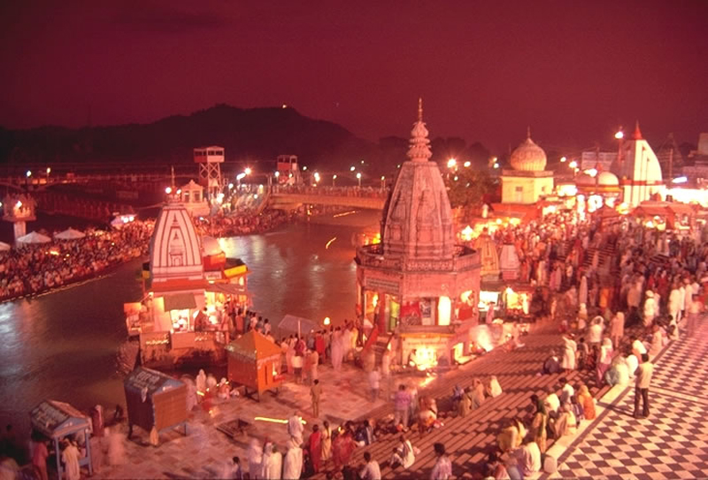
2-3 Days SpiritualUttarakhand
Evening Ganga Aarti at Har Ki Pauri, Mansa Devi Ropeway, Ram Jhula, Laxman Jhula, Triveni Ghat & Ganga Rafting.
Book This Tour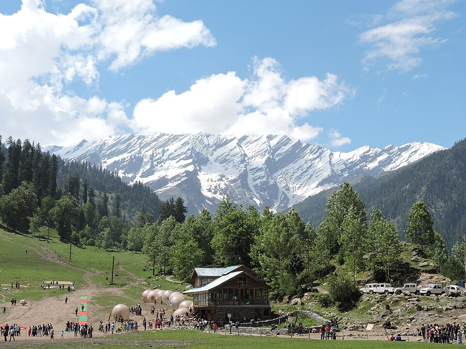
5-6 Days Hill StationHimachal Pradesh
Solang Valley snow adventures, Atal Tunnel, Mall Road Shimla, Kufri, Rohtang Pass viewpoint, and Hadimba Temple.
Book This Tour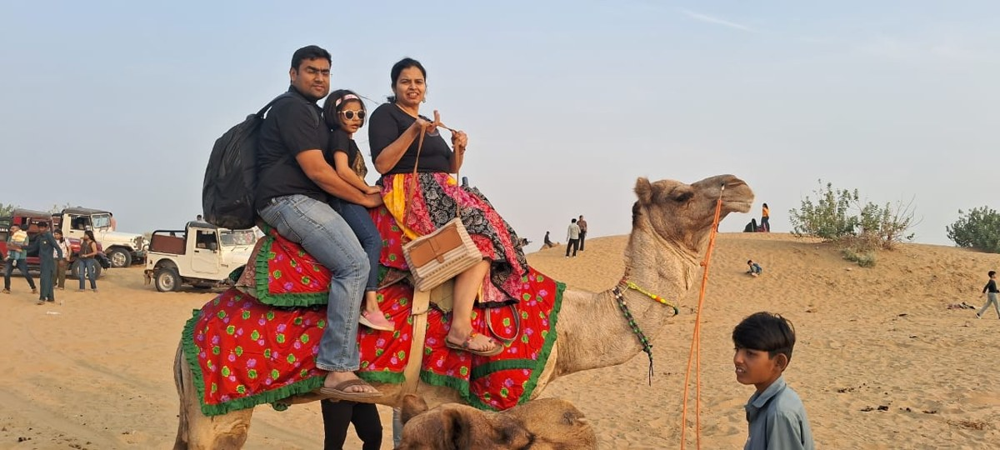
3-4 Days Desert TourThar Desert, Rajasthan
Sam Sand Dunes jeep safari, Camel ride, Golden Fort (Sonar Qila), Patwon Ki Haveli, and Desert Cultural Night.
Book This Tour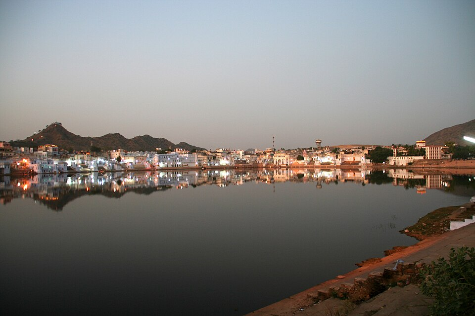
1-2 Days ReturnRajasthan
Rare Jagatpita Brahma Temple, 52 Holy Sarovar Ghats, Savitri Devi Temple hill ropeway & Khwaja Garib Nawaz Dargah.
Book This Tour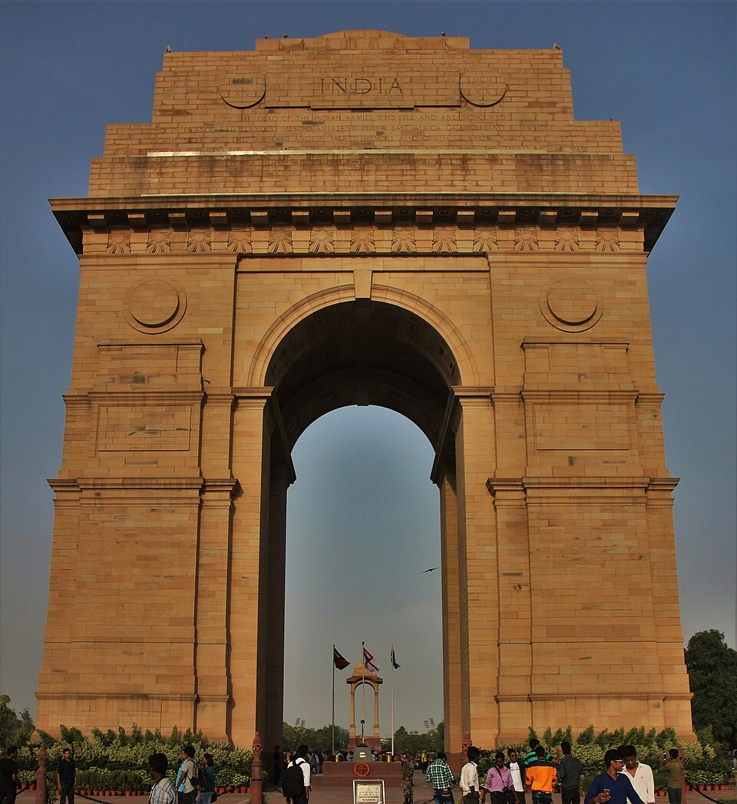
One-Way Drop (~4.5 hrs)Delhi / NCR
Direct door-to-terminal drop for IGI T3/T1, Gurugram Cyber Hub, Noida, India Gate, and central Delhi stops.
Book This Tour